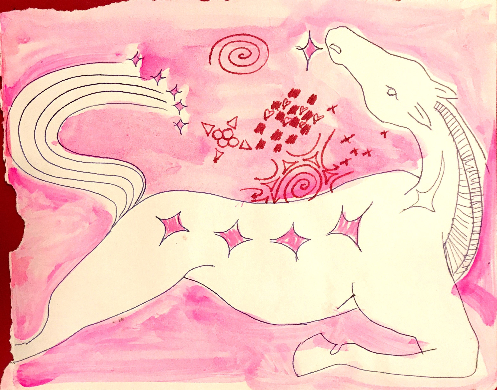

Farra was fated to a great injustice. Her evil and ill father killed and ate her mother and sisters, sparing her as the last child. She was saved so her father could assure he would be properly buried when he died. Ironically, he ate himself to death, pulling every piece of flesh off his wife and older daughter's bones. He could not stop. Their meat was sweeter and more fresh than the most intoxicating whiskey he had ever had.
After resentfully burying her father, Farra was determined to resurrect her sisters and her mother. One night as she sat, left alone with only her father's beloved mare, a snake slithered around her. It told her that the first step in resurrecting her mother and sisters was to seduce, and through love, capture her father's blue roan mare as revenge. Unsure of the fate of this first universal instruction, she bravely turned herself into a big white stud and began to chase the blue roan mare through the meadows which she grazed. The mare's fear and irritation with the stud quickly turned into a flirtatious game of hide and seek. Finally, she offered him her fertile fields to graze beside her. The mare became pregnant and gave birth to a little foal. Farra as the stud fell deeply in love with the mare and their foal. They stayed to graze and play for nine whole years. Their fields stayed fertile and they could graze all day and night. The stars shone bright for their joy.
On the third to last day of the ninth year a wolf appeared on the edge of the forest that met their field. He waited and watched there. He chased his tail and watched. He watched the foal-like prey until he became distracted by his tail again. He spun in an endless cycle of interest and distraction until the last day of the ninth year when he stopped, and his eyes remained on the little foal. He took nine beaming leaps across the plain and dug his teeth into the little foal's neck. The foal died in his jaws.
Destroyed with grief, Farra broke down into her woman form again. She leapt onto the back of the blue roan and chased down the wolf. Farra caught up to the wolf and grabbed him by the neck, pinning him to the ground. As she held his neck and looked into his eyes she felt the heat of her own foal's broken neck and saw the depths of her own baby's eyes. In this moment, Farra understood that there was no separating the wolf from her foal. In the transition from life to death, the two had become one. To make her baby her own once again, she named the wolf Two and married him. With a family of two and two halves, Farra, the blue roan and her husband-child, living in a place haunted by the memory of her baby's true form, decided that they must leave.
Feeling defeated and lost in her mission to bring back her mother and sisters, Farra returned to the site of their graves, where their bones lay. When they arrived, they were greeted by a large yellow Cougar. She was sitting on top of the bones licking the remaining dried salt and fat. The sight enraged Farra. She understood that she must kill the cougar as revenge for so deeply desecrating her dead. And she recognized that she must do this by first seducing her into softness and surrender, letting the blue roan trample her head, then letting Two rip out her soul. So Farra approached him with a snake-like walk and spoke sweetly to her until she purred and offered to lay with Farra in her grassy bed. And so they went off, and the blue roan and Two stalked them many paces behind. Farra and the cougar lay together and exchanged sweet whispers and kisses until Farra's partners trampled the cougar's head and stole her soul.
With the dead cougar beside her, Farra rose from the grassy bead. Brushing herself off and straightening her clothes, she spat on the ground. Before their eyes rose a great bundle of wheat! Upon seeing this new life grow from her spit touching the earth, Farra knew exactly what powers she now held...
With the kiss from the cougar, a creature of great power, Farra now had her strength. She understood that her saliva, stinking of death, would give her resurrecting powers.
Farra began to lick the bones of her dead mother and sisters. She licked tendon and tissue back onto the bones. She kept licking and formed layers of flesh and blood. She licked skin back onto their flesh, and finally, licked hair and color back onto her mother's and sisters' bodies. There before her they stood strong and rested. She introduced them to her blue roan, which she rode with great authority, and her husband-child, Two. The large family prospered, visitors came and stayed until the resurrection site of her mother and sisters became the center of a thriving city. Farra became the mother of the city and ruled with fearless love.
The site where Farra had buried her father had very fertile soil. The tallest, finest wheat you would ever see flourished there. The city sustained itself on loaves of bread, cakes and whiskey. So well provided for were they that no one was ever gluttonous enough to overeat. A constellation formed in the sky to show a great mare with a foal filling her belly, a wolf on her back and a great snake hanging from her neck like a charm.
Dark Mode!